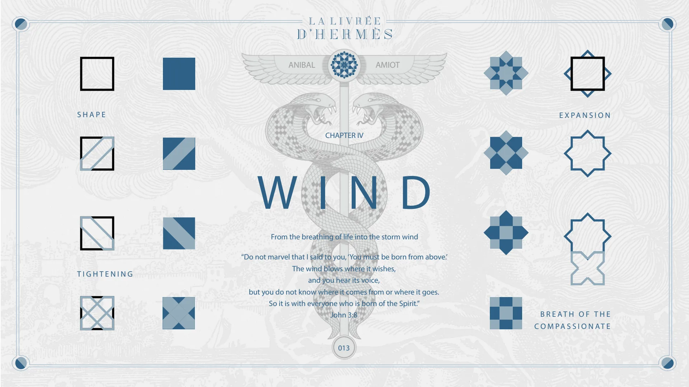
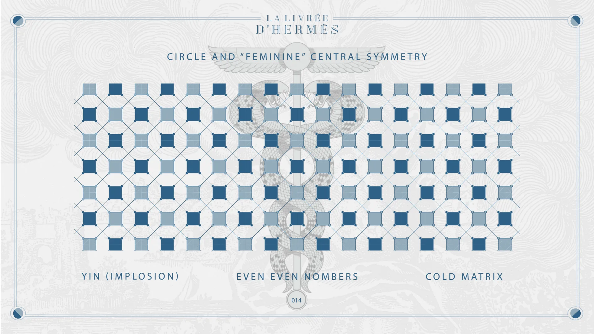
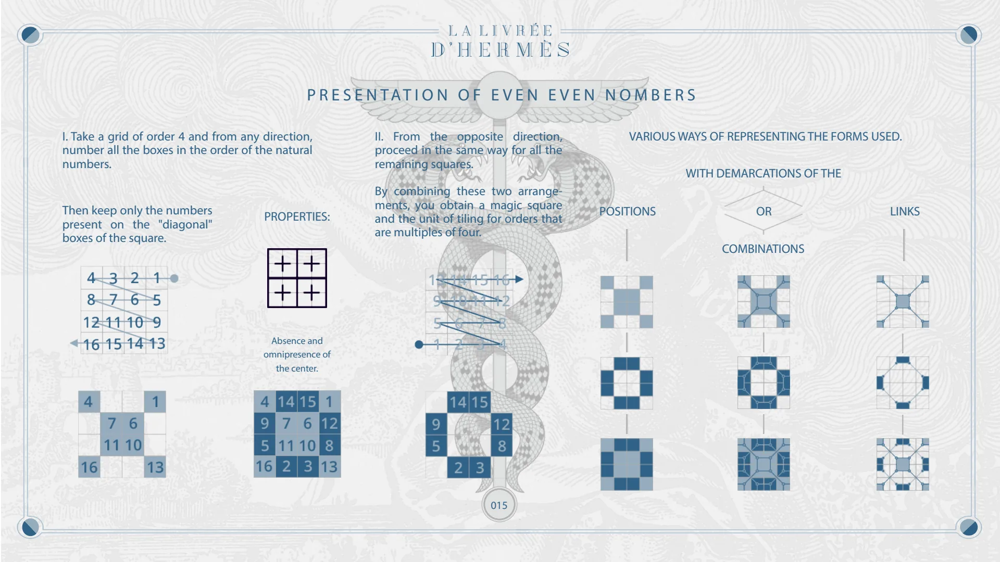
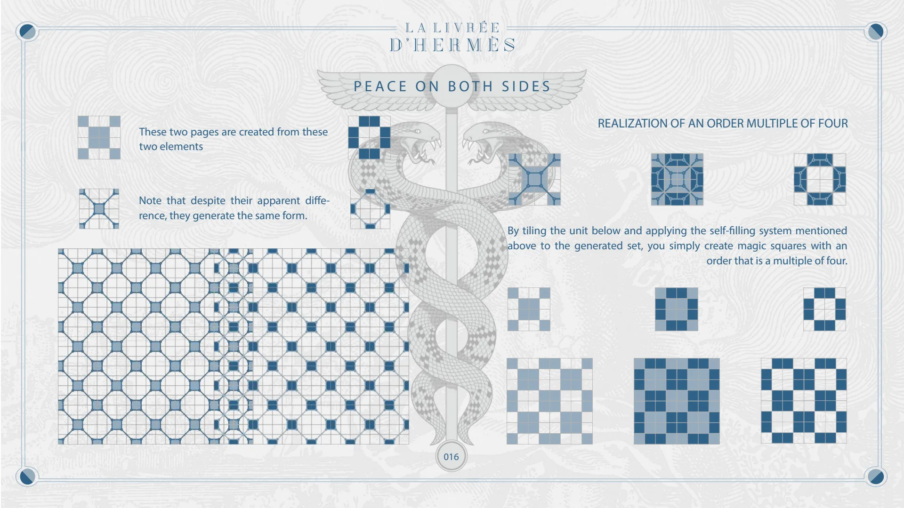
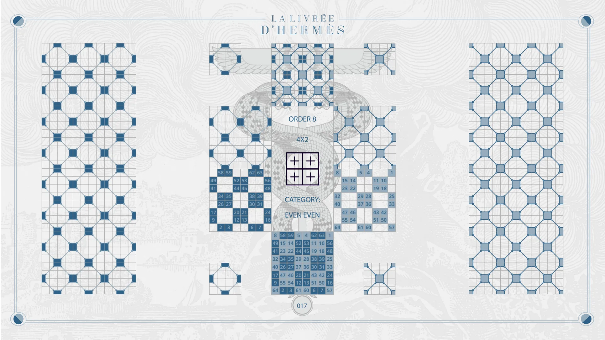
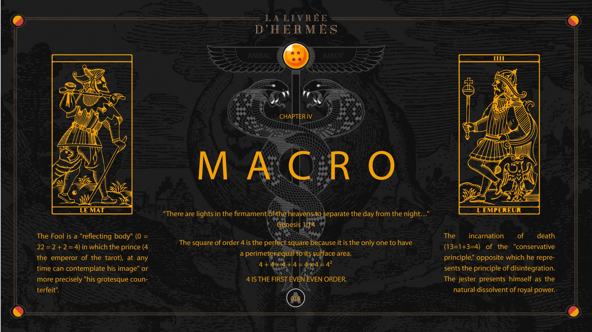
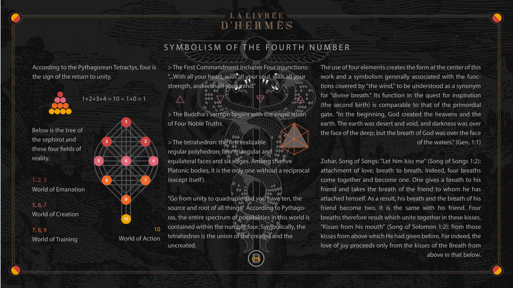
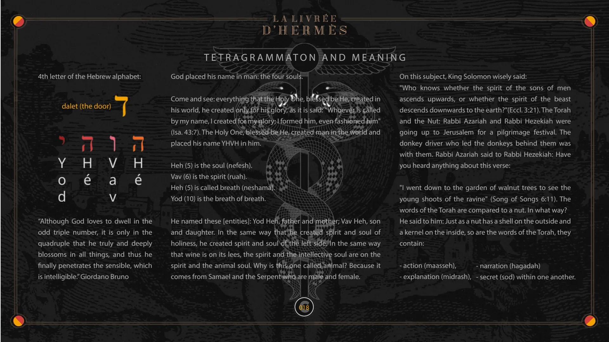

Chapter IV — Wind, Macro
Pages 013 to 018C of the book · chapter 4 of 8
Chapter IV of La Livrée d'Hermès: Wind and Macro. Even even numbers and the construction of magic squares whose order is a multiple of four, then the symbolism of the fourth number.

CHAPTER IV
WIND
SHAPE
ANIBAL
AMIOT
From the breathing of life into the storm wind
EXPANSION
TIGHTENING
“Do not marvel that I said to you, ‘You must be born from above.’ The wind blows where it wishes, and you hear its voice, but you do not know where it comes from or where it goes. So it is with everyone who is born of the Spirit.” John 3:8
BREATH OF THE COMPASSIONATE
013

CIRCLE AND “FEMININE” CENTRAL SYMMETRY
YIN (IMPLOSION)
EVEN EVEN NUMBERS
014
COLD MATRIX

PRESENTATION OF EVEN EVEN NUMBERS
I. Take a grid of order 4 and from any direction, number all the boxes in the order of the natural numbers.
Then keep only the numbers present on the "diagonal" boxes of the square.
PROPERTIES:
Absence and omnipresence of the center.
II. From the opposite direction, proceed in the same way for all the remaining squares.
VARIOUS WAYS OF REPRESENTING THE FORMS USED.
WITH DEMARCATIONS OF THE
By combining these two arrangements, you obtain a magic square and the unit of tiling for orders that are multiples of four.
POSITIONS
OR
COMBINATIONS
LINKS
015

PEACE ON BOTH SIDES
These two pages are created from these two elements
Note that despite their apparent difference, they generate the same form.
REALIZATION OF AN ORDER MULTIPLE OF FOUR
By tiling the unit below and applying the self-filling system mentioned above to the generated set, you simply create magic squares with an order that is a multiple of four.
016

ORDER 8
4X2
CATEGORY:
EVEN EVEN
017

CHAPTER IV
MACRO
The Fool is a "reflecting body" (0 = 22 = 2 + 2 = 4) in which the prince (4 the emperor of the tarot), at any time can contemplate his image" or more precisely "his grotesque counterfeit".
ANIBAL
AMIOT
“There are lights in the firmament of the heavens to separate the day from the night…” Genesis 1:14
The square of order 4 is the perfect square because it is the only one to have a perimeter equal to its surface area. 4 + 4 + 4 + 4 = 4 x 4 = 4²
4 IS THE FIRST EVEN EVEN ORDER.
A
The incarnation of death
(13=1+3=4) of the "conservative principle," opposite which he represents the principle of disintegration. The jester presents himself as the natural dissolvent of royal power.
018

SYMBOLISM OF THE FOURTH NUMBER
According to the Pythagorean Tetractys, four is the sign of the return to unity.
1+2+3+4 = 10 = 1+0 = 1
Below is the tree of the sephirot and these four fields of reality.
1, 2, 3 World of Emanation 5, 6, 7 World of Creation 7, 8, 9 World of Training
10 World of Action
> The First Commandment includes Four Injunctions: "...With all your heart, with all your soul, with all your strength, and with all your mind."
> The Buddha's sermon begins with the enunciation of Four Noble Truths.
> The tetrahedron: the first realizable regular polyhedron; four triangular and equilateral faces and six edges. Among the five Platonic bodies, it is the only one without a reciprocal (except itself).
"Go from unity to quadruple and you have ten, the source and root of all things." According to Pythagoras, the entire spectrum of possibilities in this world is contained within the number four. Symbolically, the tetrahedron is the union of the created and the uncreated.
B 018
The use of four elements creates the form at the center of this work and a symbolism generally associated with the functions covered by "the wind," to be understood as a synonym for "divine breath." Its function in the quest for inspiration (the second birth) is comparable to that of the primordial gate. "In the beginning, God created the heavens and the earth. The earth was desert and void, and darkness was over the face of the deep; but the breath of God was over the face of the waters." (Gen. 1:1)
Zohar, Song of Songs: "Let him kiss me" (Song of Songs 1:2): attachment of love, breath to breath. Indeed, four breaths come together and become one. One gives a breath to his friend and takes the breath of the friend to whom he has attached himself. As a result, his breath and the breath of his friend become two. It is the same with his friend. Four breaths therefore result which unite together in these kisses. "Kisses from his mouth" (Song of Solomon 1:2): from those kisses from above which He had given before. For indeed, the love of joy proceeds only from the kisses of the Breath from above in that below.

TETRAGRAMMATON AND MEANING
4th letter of the Hebrew alphabet:
dalet (the door)
“Although God loves to dwell in the odd triple number, it is only in the quadruple that he truly and deeply blossoms in all things, and thus he finally penetrates the sensible, which is intelligible.” Giordano Bruno
God placed his name in man: the four souls.
Come and see: everything that the Holy One, blessed be He, created in his world, he created only for his glory, as it is said: "Whoever is called by my name, I created for my glory; I formed him, even fashioned him" (Isa. 43:7). The Holy One, blessed be He, created man in the world and placed his name YHVH in him.
Heh (5) is the soul (nefesh). Vav (6) is the spirit (ruah). Heh (5) is called breath (neshama). Yod (10) is the breath of breath.
He named these [entities]: Yod Heh, father and mother; Vav Heh, son and daughter. In the same way that he created spirit and soul of holiness, he created spirit and soul of the left side. In the same way that wine is on its lees, the spirit and the intellective soul are on the spirit and the animal soul. Why is this one called animal? Because it comes from Samael and the Serpent who are male and female.
On this subject, King Solomon wisely said: "Who knows whether the spirit of the sons of men ascends upwards, or whether the spirit of the beast descends downwards to the earth?"(Eccl. 3:21). The Torah and the Nut: Rabbi Azariah and Rabbi Hezekiah were going up to Jerusalem for a pilgrimage festival. The donkey driver who led the donkeys behind them was with them. Rabbi Azariah said to Rabbi Hezekiah: Have you heard anything about this verse:
"I went down to the garden of walnut trees to see the young shoots of the ravine" (Song of Songs 6:11). The words of the Torah are compared to a nut. In what way? He said to him: Just as a nut has a shell on the outside and a kernel on the inside, so are the words of the Torah, they contain:
- action (maasseh), - explanation (midrash),
- narration (hagadah) - secret (sod) within one another.
C 018
© Anibal Edelberto Amiot. CC BY-NC 4.0 — creativecommons.org/licenses/by-nc/4.0 · DOI 10.5281/zenodo.22722485